3330D02 BRAKE SERVO/BRAKE PUMP ASSEMBLY - R.R.
- Path
- Procedures > 33 BRAKES > 3330 HYDRAULIC BRAKE SYSTEM > 3330D BRAKE VACUUM SYSTEM > 3330D02 BRAKE SERVO/BRAKE PUMP ASSEMBLY - R.R.
- Kind
- repair procedure (removal / refitting; the operation number is the code)
- Applies to
- all engines; all production periods
- Interactive page
- https://sloeber94.github.io/elrnDB-fCrm/en/#/194000492
Applies to: all engines; all production periods
 Removing
Removing
 Refitting
RefittingOp. 5530B52 BATTERY SUPPORT/DRIP TRAY - R.R
Op. 7040A24 LOWER FACIA COVER TRIM - R+R
Op. 7040A26 STEERING COLUMN TRIM - R+R
Op. 7040A44 LEFT DASHBOARD SIDE TRIM - R.R.
Op. 5010C57 LEFT LOWER AIR DIFFUSER - R R
Op. 5580C23 DRIVE SIDE KNEE PROTECTION AIR BAG MODULE R. R.
Op. 7040A30 LEFT LOWER DASHBOARD TRIM - R.R.
1. Remove the retaining clip (1a), release the return spring (1b) and extract the pin (1c) connecting the brake servo to the brake pedal.
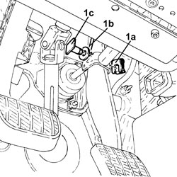
Applies to: all engines; all production periods
- Replace the brake-clutch fluid reservoir plug using the tool.
Tool | Description | Function | Validity |
|---|---|---|---|
2000001400 | Plug | Brake/clutch fluid reservoir cap |
1. Disconnect the electrical connection from the minimum brake fluid level warning light switch.
Description | Connector | |
|---|---|---|
1 | Brake fluid level sensor (switch) |
2. Loosen the band and disconnect the pipe from the clutch reservoir to the master cylinder, reservoir side.
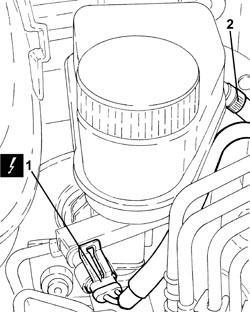
Applies to: all engines; all production periods
1. Undo the connectors (1a) and disconnect the pipes from the master cylinder to the electro-hydraulic control unit (1b), electro-hydraulic control unit side.
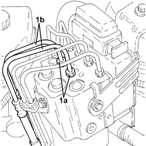
Applies to: all engines; all production periods
1. Undo the connectors (1a), disconnect the pipes from the master cylinder to the electro-hydraulic control unit (1b), master cylinder side and remove them.
2. Disconnect the single-acting valve from the brake servo.
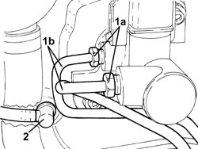
Applies to: all engines; all production periods
1. Rotate the engine coolant supply reservoir as illustrated in the diagram, then remove it.
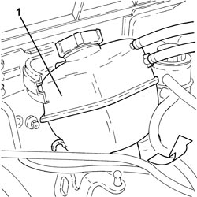
Applies to: all engines; all production periods
1. Undo the nuts (1a) and remove the engine coolant supply reservoir mounting bracket (1b).
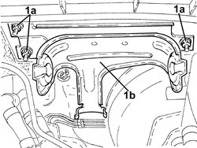
Applies to: all engines; all production periods
1. Undo the bolts (1a) and remove the brake servo/brake pump (1b) complete with the reservoir (1c).
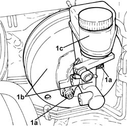
Applies to: all engines; all production periods
1. At the bench, undo the nuts (1a) and separate the brake servo (1b) from the brake master cylinder (1c) complete with reservoir (1d).
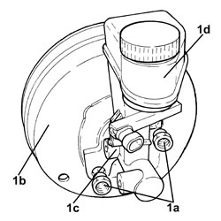
Applies to: all engines; all production periods
Refitting
Removing- Clean the surface of the brake servo and the engine compartment bulkhead.
- Replace the seal on the brake master cylinder.
1. Assemble the brake servo (1a) and the brake master cylinder (1b) complete with reservoir (1c) and tighten the nuts (1d) to the recommended torque.
Component | Fastening | dia | Value (daNm) | Validity |
|---|---|---|---|---|
Master cylinder brake (pump) | Nut (to replace) | - | (brake servo side) 2.1 - 2.9 |
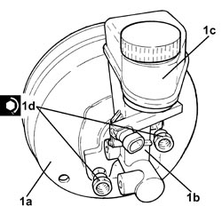
Applies to: all engines; all production periods
1. Place the bearing cap (1a) in its seat complete with half-bearing (1b) and secure it by tightening the bolts (1c) to the recommended torque.
Component | Fastening | dia | Value (daNm) | Validity |
|---|---|---|---|---|
Brake servo | Bolt | M8 | (pedals side) 1.8 - 2.2 |
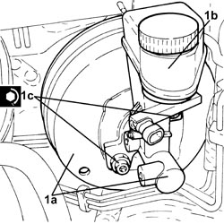
Applies to: all engines; all production periods
- Place the engine coolant reservoir mounting bracket in its housing and secure it using the nuts.
- Place the engine coolant supply reservoir in its housing.
1. Connect the single-acting valve to the brake servo.
2. Place the pipes from the master cylinder to the electro-hydraulic (2a) in their housing, connect them to the master cylinder and tighten the connectors (2b) to the recommended torque.
Component | Fastening | dia | Value (daNm) | Validity |
|---|---|---|---|---|
Brake pipe connectors | Connector | M10/M12 | 1.4 ÷ 1.8 |
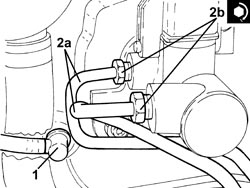
Applies to: all engines; all production periods
1. Connect the pipes from the master cylinder to the electro-hydraulic control unit (1a), electro-hydraulic control unit side and tighten the connectors (1b) to the recommended torque.
Component | Fastening | dia | Value (daNm) | Validity |
|---|---|---|---|---|
Brake pipe connectors | Connector | M10/M12 | 1.4 ÷ 1.8 |
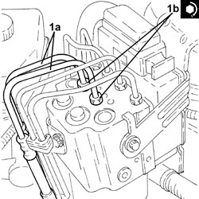
Applies to: all engines; all production periods
- Connect the pipe from the clutch reservoir to the master cylinder, reservoir side and tighten the band.
- Connect the electrical connection to the brake fluid minimum level warning light switch.
- Replace the brake-clutch fluid reservoir plug using the tool.
Tool | Description | Function | Validity |
|---|---|---|---|
2000001400 | Plug | Brake/clutch fluid reservoir cap |
- Place the pin connecting the brake servo to the brake pedal in its housing, connect the return spring and fit the retaining clip.
Op. 7040A30 LEFT LOWER DASHBOARD TRIM - R.R.
Op. 5580C23 DRIVE SIDE KNEE PROTECTION AIR BAG MODULE R. R.
Op. 5010C57 LEFT LOWER AIR DIFFUSER - R R
Op. 7040A44 LEFT DASHBOARD SIDE TRIM - R.R.
Op. 7040A26 STEERING COLUMN TRIM - R+R
Op. 7040A24 LOWER FACIA COVER TRIM - R+R
Op. 5530B52 BATTERY SUPPORT/DRIP TRAY - R.R
Op. 0010T64 BRAKE AND/OR CLUTCH FLUID CHECK LEVEL AND TOP UP AS NECESSARY
Topics linked from this page (11)
- 0010T64 BRAKE AND/OR CLUTCH FLUID CHECK LEVEL AND TOP UP AS NECESSARY
- 0010T65 HYDRAULIC BRAKE SYSTEM - BLEED AIR
- 5010C57 LEFT LOWER AIR DIFFUSER - R R
- 5530B10 BATTERY - R+R
- 5530B52 BATTERY SUPPORT/DRIP TRAY - R.R
- 5580C23 DRIVE SIDE KNEE PROTECTION AIR BAG MODULE R. R.
- 7040A24 LOWER FACIA COVER TRIM - R+R
- 7040A26 STEERING COLUMN TRIM - R+R
- 7040A30 LEFT LOWER DASHBOARD TRIM - R.R.
- 7040A44 LEFT DASHBOARD SIDE TRIM - R.R.
- K025 BRAKE FLUID LEVEL SENSOR (SWITCH)